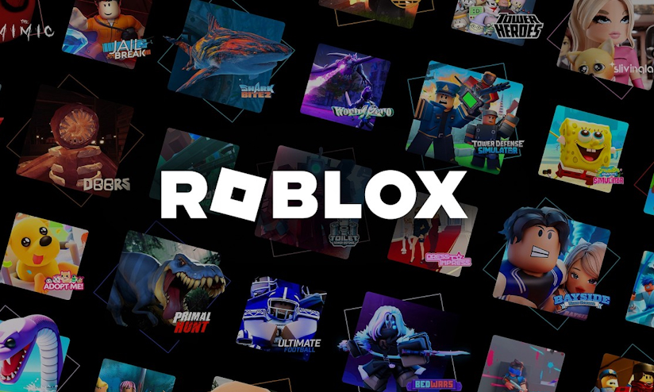
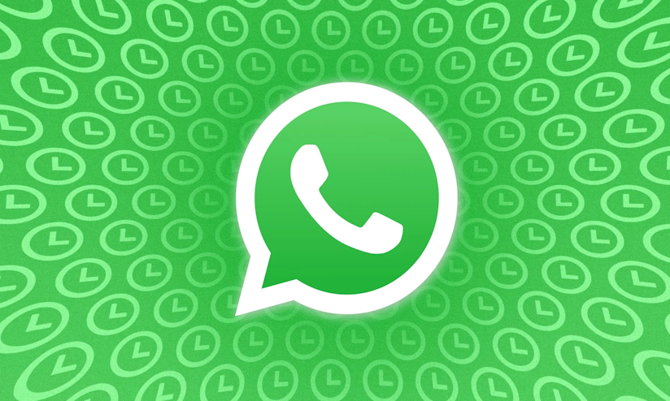
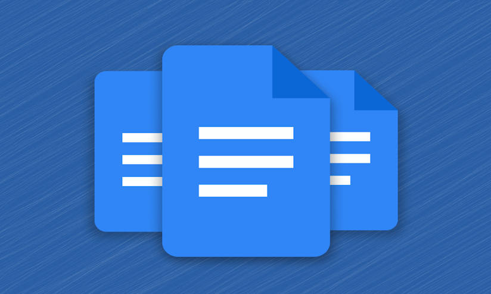

Meu sites favoritos: Ruan Carlos
Youtube
O Youtube sempre foi o meu principal método de lazer, sempre assistindo vídeo que me interessam ou que me fornecem conhecimento.
Link para o Youtube.
Roblox

O Roblox também é outra forma de passar o tempo, além do Youtube, porém ao invés de assistir vídeos, a plataforma tem milhares de jogos para me divertir.
Link para a página inicial do Roblox.
WhatsApp Web

Normalmente sempre tenho-o aberto, uso o WhatsApp para me comunicar fácilmente com a minha família e colegas de escola.
Apesar do app no celular existir, sempre é bom deixar a versão de site aberta no PC, pois é lá onde passo mais tempo.
Link para o WhatsApp Web.
Discord
Outro app de comunicação, só que com o Discord, uso-o para falar com meus amigos de outros países, e uso mais como entretenimento do que para trabalhos, como o WhatsApp.
Link para a página de entrada do Discord.
Google Docs

Devo admitir que não conseguia pensar em outro site para escolher, no entanto, me ocorreu de quão útil o Google Docs têm sido para mim, especialmente para a realização das agendas.
Link para o Google Docs.